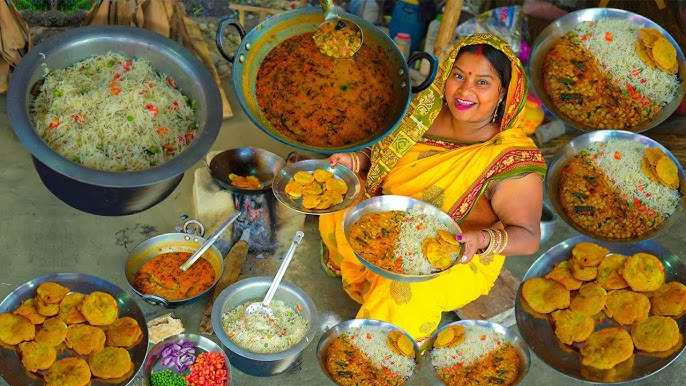

Discover the Cultural Diversity and Traditions of Begusarai
Begusarai’s culture is deeply rooted in its traditions and the local arts and crafts that have been passed down through generations. The city is particularly known for its traditional Maithili paintings, which depict rural life, mythology, and natural beauty. These vibrant and intricate paintings have gained international recognition for their unique style and techniques.
Maithili paintings are characterized by their bold colors, geometric patterns, and elaborate details. These paintings often tell stories from Hindu mythology and local folklore, with themes such as Lord Krishna’s childhood, the Ramayana, and the Mahabharata. The bright colors used in these paintings are derived from natural dyes, and the intricate patterns reflect the deep connection between the artist and nature.
The festivals of Begusarai are a reflection of the city’s rich cultural heritage. One of the most important festivals in the region is Chhath Puja, a celebration dedicated to the Sun God. This festival, which is observed by the people of Begusarai with great enthusiasm, involves fasting, offering prayers, and bathing in the river to thank the Sun for sustaining life on Earth.
Apart from Chhath Puja, other significant festivals celebrated in Begusarai include Holi, Diwali, Durga Puja, and the local Maithili New Year. Each festival is celebrated with a unique blend of rituals, music, dance, and community gatherings, highlighting the diversity of the city’s traditions. Traditional folk dances such as Bidesia and Jat-Jatin are performed during these festivals, bringing together the community in joyous celebration.
The primary language spoken in Begusarai is Maithili, a part of the Bihari language group. Maithili is a language rich in literature, and many renowned poets and writers have hailed from the region. One such poet is Ramdhari Singh Dinkar, whose literary works are celebrated across India. Dinkar’s poetry has had a profound influence on the political and social landscape of Bihar, with his verses inspiring generations to fight for justice and equality.
Music is another integral part of Begusarai’s culture. Traditional Maithili folk music, which includes songs that narrate the region’s history, love stories, and social issues, is a key feature of cultural celebrations. Instruments like the dholak, tabla, and harmonium are often used during folk performances. The region is also known for its classical music performances, including Hindustani classical music, which is performed at various cultural events and gatherings.

Begusarai is home to several landmarks that reflect its cultural and historical importance. The city’s temples, which are dedicated to various Hindu gods and goddesses, are important centers of religious activity. One such temple is the Simaria Dham, a revered religious site where thousands of devotees gather every year to offer their prayers. The temples are not only places of worship but also significant cultural hubs, where traditional music and dance performances are held during festivals.
The cultural richness of Begusarai is also seen in its culinary traditions, which are deeply connected to the region’s festivals and agricultural cycle. Food plays an essential role in the celebration of festivals, with special dishes being prepared and shared among family and friends.
While Begusarai has maintained its traditional cultural practices, the influence of modernity has brought about significant changes. The younger generation is increasingly exposed to global cultural trends through the internet, media, and urbanization. This has led to a blend of traditional Maithili culture with contemporary music, fashion, and lifestyle choices.
However, despite these changes, the people of Begusarai take great pride in their cultural roots and continue to preserve and promote their traditions. Cultural organizations, local artists, and community groups work hard to keep the rich heritage of Begusarai alive for future generations.
In conclusion, the culture of Begusarai is a beautiful amalgamation of tradition and modernity. Its festivals, arts, music, and language reflect the diversity and vibrancy of the region. Visitors to Begusarai are not only exposed to its rich history but also its lively and evolving cultural scene.